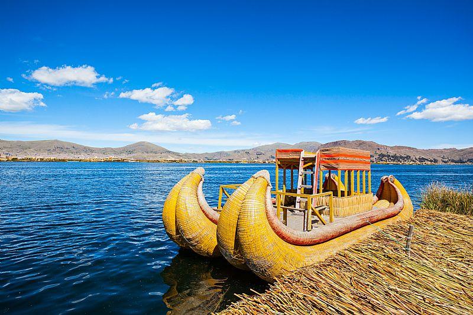

🌊 Lago Titicaca - Maravilla del Altiplano 🛶
El Lago

- Ubicado entre Perú y Bolivia, a más de 3,800 msnm.
- Es el lago navegable más alto del mundo.
- Superficie: más de 8,500 km.
Islas Flotantes de los Uros

- Hechas a base de totora, una planta que crece en el lago.
- Los Uros viven en estas islas y conservan sus costumbres ancestrales.
- Son uno de los atractivos turísticos más visitados.
Isla de Taquile
- Famosa por sus tejidos artesanales reconocidos por la UNESCO.
- La vida comunitaria sigue tradiciones colectivas y agrícolas.
- Posee miradores con espectaculares paisajes del lago.
Isla de Amantaní
- Conocida como la isla del descanso espiritual.
- Cuenta con templos dedicados a la Pachamama y al Pachatata.
- Se practica turismo vivencial en casas de familias locales.